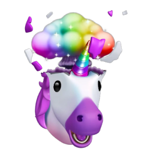

캐릭터로


거루
UX UI designer
Character description
디자이너의 자아
변화를 만들어내고 싶어요
성격은 순하지만 스펙은 남다른,
강한 캥거루같은 디자이너를 목표로 하는 부캐릭터예요.
디자인 근육을 키우기 위해 노력하고 있어요.
Skill
Character interview
어떤 디자인 철학을 가지고 있나요?
저는 UX가 연극의 배경과 같다고 생각해요.
연극의 분위기를 고민하지 않게 해주는 배경이요.
유저가 고민없이 프로덕트를 사용하도록 만드는게 UX 디자인이라고 생각해요.
그래서 디자인 과정에서 항상 고민이 생기는 여러 요소를 생각하고 파고들어요.
The world
디자이너의 자아 거루의 경험 피드예요
이미지를 클릭하면 설명을 볼 수 있어요

클로이
일단 하고본다
Character description
도전의 자아
일단 시작하고 본다!
저는 조심성이 많지만, 새로운 걸 좋아해서 많은 도전을 하곤 해요.
의외성이 있는 유니콘같은 부캐릭터예요.
때론 도전에 실패하더라도, 과정 속의 경험에서 많은 것을 얻는 편이예요.
Skill
Character interview
무작정 도전한 일에 후회한 적 없나요?
저는 조심성이 굉장히 많지만,
새로운 걸 얻을 수 있는 기회는 일단 잡고봐요.
일단 최선을 다해 해보면 결과에 상관없이,
또 다른 기회가 온다는 걸 경험했기 때문이에요.
그래서 설령 실패해도 후회한 적은 없고, 그 환경 안에서 최선을 다합니다.